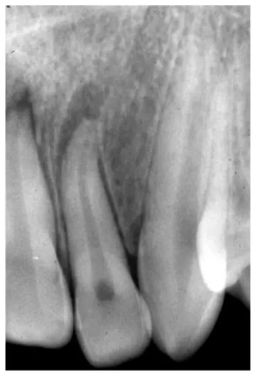
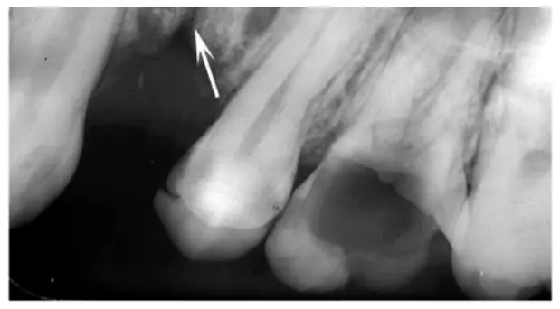

نسخه استخراجشده؛ ترجمه یا تأیید علمی انجام نشده است. وضعیت: captured
این درس با دو آسیبی شروع میشود که روی تصویر تقریباً چیزی نشان نمیدهند — و همین، درس اصلیشان است.

کانکاشن آسیب به بافتهای پریودنتال در آپکس ریشه است بدون لق شدن یا جابهجایی. و روی تصویر: «ظاهر تصویری یک کانکاشن دندانی ممکن است ظریف باشد. ممکن است هیچ تغییری دیده نشود، یا پهن شدن موضعی فضای PDL آپیکال وجود داشته باشد.»
و درمانش محافظهکارانه است — تنظیم اکلوزال دندان مقابل در صورت لزوم، یا اسپلینت انعطافپذیر. ولی یک عدد پیگیری را ضروری میکند: «تقریباً ۴٪ دندانهای دچار کانکاشن ظرف یک سال دچار نکروز پالپ میشوند.» پس پایش پس از ۴ هفته و ۱ سال با تست حیات و تصویر لازم است.
و سابلوکسیشن: آسیب بافت پریودنتال که «مقدار بیشتری لق شدن غیرطبیعی از کانکاشن ایجاد میکند، ولی بدون جابهجایی».
و نشانهی بالینی تفکیککنندهاش: «خونریزی در شیار لثه، نشانهی آسیب به بافتهای پریودنتال است.» دندان به دق افقی و عمودی حساس است و به نیروی گاز گرفتن هم. روی تصویر، مانند کانکاشن: یا هیچ تغییری، یا پهن شدن موضعی PDL آپیکال.
و برنامهی پیگیری سابلوکسیشن مفصلتر است: ۲ هفته، ۱۲ هفته، ۶ ماه و ۱ سال، با تست حیات مکرر.
و حالا یک پدیدهی تصویری که اشتباه رایج کلاسیکی میسازد — کلاهک استئودنتینی (osteodentin cap): دندانی که پیش از بسته شدن آپکس ترومایی دیده، میتواند آپکسی با مورفولوژی غیرطبیعی بسازد. سازوکارش زیباست: «چون فرایند نکروز پالپ از کرونال شروع میشود و به سمت آپیکال پیش میرود، اودونتوبلاستهای زنده ممکن است در آپکس در حال تکامل باقی بمانند و عاج ترشیاری (استئودنتین) را جلوتر از جبههی پیشروندهی نکروز رسوب دهند.»
و چگونه از تحلیل داخلی جدا میشود؟ در کلاهک استئودنتینی، کانال ریشه بهطور یکنواخت پهن است و رشد کانال و رسوب عاج انگار «در زمان یخ زده» و در همان مرحلهی تکاملی متوقف شده است. و اگر کلاهک «پوشیده» یا پنهان به نظر برسد، آپکس ریشه یادآور یک آپکس در حال تکامل میشود.
و مدیریت دندان دارای کلاهک استئودنتینی: درمان ریشهی ارتوگراد.
لوکسیشن، دررفتگی دندان از ساکت پس از پاره شدن اتصال پریودنتال است — دندان هم لق است و هم جابهجا.

و سه نوعش، بر پایهی جهت نیرو:
و یک همراهی مهم: در لوکسیشن اینتروزیو و لترال، «خردشدگی یا لهشدگی زائدهی آلوئولار میتواند دررفتگی دندان را همراهی کند» — پس در این دو نوع، استخوان را جداگانه بررسی کن.
و پیامد پالپی لوکسیشن، دو مسیر کاملاً متضاد دارد: «حرکت آپکس و اختلال گردش خون دندان ترومادیده میتواند تغییرات موقت یا دائم در پالپ ایجاد کند، و این تغییرات ممکن است به نکروز پالپ بینجامد. ولی اگر پالپ از حادثه جان به در ببرد، سرعت تشکیل عاج ممکن است شتاب بگیرد و ادامه یابد تا اتاقک پالپ و کانال ریشه را محو کند.» و این در هر دو دنتیشن دائمی و شیری رخ میدهد.
پس در تصویر پیگیری، دو یافتهی متضاد هر دو با تروما سازگارند: محو شدن پالپ (پالپ زنده مانده و واکنش نشان داده) یا ضایعهی پریاپیکال با کانال پهن ثابت (پالپ نکروز شده). دیدن هر کدام، مسیر درمانی متفاوتی میسازد.
و یافتههای بالینی لوکسیشن: «سابقهی بالینی در شناسایی لوکسیشن کمککننده است. تاج بالینی دندانهای اینترودشده ممکن است کوتاهتر به نظر برسد» — و انسیزورهای ماگزیلا میتوانند چنان عمیق در زائدهی آلوئولار فرو بروند که به نظر برسد وجود ندارند.
و همینجا خطر بزرگ کودکان است: اینتروژن دندان شیری میتواند به دندانهای مجاور و بهویژه به دندانهای دائمی در حال تکامل زیرین آسیب بزند. و موقعیت فرورفتهی تاج دندان اینترودشده «اغلب دشوار است که روی تصویر نشان داده شود».
نوع سؤال: ساخت کلمه · 4 خانه
حروف منبع: ی · ا · ت · ح